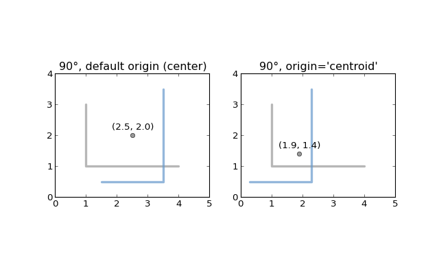
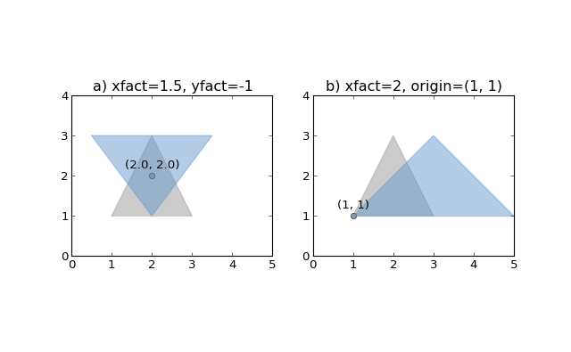
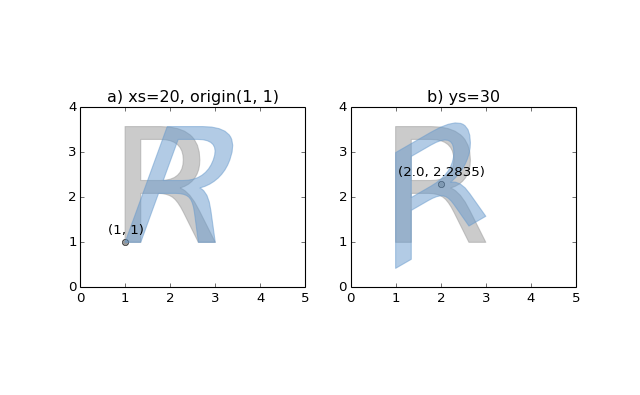

The Shapely User Manual¶
| Author: | Sean Gillies, <sean.gillies@gmail.com> |
|---|---|
| Version: | 1.2 and 1.3 |
| Date: | December 31, 2013 |
| Copyright: | This work is licensed under a Creative Commons Attribution 3.0 United States License. |
| Abstract: | This document explains how to use the Shapely Python package for computational geometry. |
|---|
Introduction¶
Deterministic spatial analysis is an important component of computational approaches to problems in agriculture, ecology, epidemiology, sociology, and many other fields. What is the surveyed perimeter/area ratio of these patches of animal habitat? Which properties in this town intersect with the 50-year flood contour from this new flooding model? What are the extents of findspots for ancient ceramic wares with maker’s marks “A” and “B”, and where do the extents overlap? What’s the path from home to office that best skirts identified zones of location based spam? These are just a few of the possible questions addressable using non-statistical spatial analysis, and more specifically, computational geometry.
Shapely is a Python package for set-theoretic analysis and manipulation of planar features using (via Python’s ctypes module) functions from the well known and widely deployed GEOS library. GEOS, a port of the Java Topology Suite (JTS), is the geometry engine of the PostGIS spatial extension for the PostgreSQL RDBMS. The designs of JTS and GEOS are largely guided by the Open Geospatial Consortium‘s Simple Features Access Specification [1] and Shapely adheres mainly to the same set of standard classes and operations. Shapely is thereby deeply rooted in the conventions of the geographic information systems (GIS) world, but aspires to be equally useful to programmers working on non-conventional problems.
The first premise of Shapely is that Python programmers should be able to perform PostGIS type geometry operations outside of an RDBMS. Not all geographic data originate or reside in a RDBMS or are best processed using SQL. We can load data into a spatial RDBMS to do work, but if there’s no mandate to manage (the “M” in “RDBMS”) the data over time in the database we’re using the wrong tool for the job. The second premise is that the persistence, serialization, and map projection of features are significant, but orthogonal problems. You may not need a hundred GIS format readers and writers or the multitude of State Plane projections, and Shapely doesn’t burden you with them. The third premise is that Python idioms trump GIS (or Java, in this case, since the GEOS library is derived from JTS, a Java project) idioms.
If you enjoy and profit from idiomatic Python, appreciate packages that do one thing well, and agree that a spatially enabled RDBMS is often enough the wrong tool for your computational geometry job, Shapely might be for you.
Spatial Data Model¶
The fundamental types of geometric objects implemented by Shapely are points, curves, and surfaces. Each is associated with three sets of (possibly infinite) points in the plane. The interior, boundary, and exterior sets of a feature are mutually exclusive and their union coincides with the entire plane [2].
- A Point has an interior set of exactly one point, a boundary set of exactly no points, and an exterior set of all other points. A Point has a topological dimension of 0.
- A Curve has an interior set consisting of the infinitely many points along its length (imagine a Point dragged in space), a boundary set consisting of its two end points, and an exterior set of all other points. A Curve has a topological dimension of 1.
- A Surface has an interior set consisting of the infinitely many points within (imagine a Curve dragged in space to cover an area), a boundary set consisting of one or more Curves, and an exterior set of all other points including those within holes that might exist in the surface. A Surface has a topological dimension of 2.
That may seem a bit esoteric, but will help clarify the meanings of Shapely’s spatial predicates, and it’s as deep into theory as this manual will go. Consequences of point-set theory, including some that manifest themselves as “gotchas”, for different classes will be discussed later in this manual.
The point type is implemented by a Point class; curve by the LineString and LinearRing classes; and surface by a Polygon class. Shapely implements no smooth (i.e. having continuous tangents) curves. All curves must be approximated by linear splines. All rounded patches must be approximated by regions bounded by linear splines.
Collections of points are implemented by a MultiPoint class, collections of curves by a MultiLineString class, and collections of surfaces by a MultiPolygon class. These collections aren’t computationally significant, but are useful for modeling certain kinds of features. A Y-shaped line feature, for example, is well modeled as a whole by a MultiLineString.
The standard data model has additional constraints specific to certain types of geometric objects that will be discussed in following sections of this manual.
See also http://www.vividsolutions.com/jts/discussion.htm#spatialDataModel for more illustrations of this data model.
Relationships¶
The spatial data model is accompanied by a group of natural language relationships between geometric objects – contains, intersects, overlaps, touches, etc. – and a theoretical framework for understanding them using the 3x3 matrix of the mutual intersections of their component point sets [2]: the DE-9IM. A comprehensive review of the relationships in terms of the DE-9IM is found in [4] and will not be reiterated in this manual.
Operations¶
Following the JTS technical specs [5], this manual will make a distinction between constructive (buffer, convex hull) and set-theoretic operations (intersection, union, etc.). The individual operations will be fully described in a following section of the manual.
Coordinate Systems¶
Even though the Earth is not flat – and for that matter not exactly spherical – there are many analytic problems that can be approached by transforming Earth features to a Cartesian plane, applying tried and true algorithms, and then transforming the results back to geographic coordinates. This practice is as old as the tradition of accurate paper maps.
Shapely does not support coordinate system transformations. All operations on two or more features presume that the features exist in the same Cartesian plane.
Geometric Objects¶
Geometric objects are created in the typical Python fashion, using the classes themselves as instance factories. A few of their intrinsic properties will be discussed in this sections, others in the following sections on operations and serializations.
Instances of Point, LineString, and LinearRing have as their most important attribute a finite sequence of coordinates that determines their interior, boundary, and exterior point sets. A line string can be determined by as few as 2 points, but contains an infinite number of points. Coordinate sequences are immutable. A third z coordinate value may be used when constructing instances, but has no effect on geometric analysis. All operations are performed in the x-y plane.
In all constructors, numeric values are converted to type float. In other words, Point(0, 0) and Point(0.0, 0.0) produce geometrically equivalent instances. Shapely does not check the topological simplicity or validity of instances when they are constructed as the cost is unwarranted in most cases. Validating factories are trivially implemented, using the is_valid predicate, by users that require them.
General Attributes and Methods¶
- object.area¶
Returns the area (float) of the object.
- object.bounds¶
Returns a (minx, miny, maxx, maxy) tuple (float values) that bounds the object.
- object.length¶
Returns the length (float) of the object.
- object.geom_type¶
Returns a string specifying the Geometry Type of the object in accordance with [1].
>>> print Point(0, 0).geom_type
Point
- object.distance(other)¶
Returns the minimum distance (float) to the other geometric object.
>>> Point(0,0).distance(Point(1,1))
1.4142135623730951
- object.representative_point()¶
Returns a cheaply computed point that is guaranteed to be within the geometric object.
Note
This is not in general the same as the centroid.
>>> donut = Point(0, 0).buffer(2.0).difference(Point(0, 0).buffer(1.0))
>>> donut.centroid.wkt
'POINT (-0.0000000000000001 -0.0000000000000000)'
>>> donut.representative_point().wkt
'POINT (-1.5000000000000000 0.0000000000000000)'
Points¶
- class Point(coordinates)¶
The Point constructor takes positional coordinate values or point tuple parameters.
>>> from shapely.geometry import Point
>>> point = Point(0.0, 0.0)
>>> q = Point((0.0, 0.0))
A Point has zero area and zero length.
>>> point.area
0.0
>>> point.length
0.0
Its x-y bounding box is a (minx, miny, maxx, maxy) tuple.
>>> point.bounds
(0.0, 0.0, 0.0, 0.0)
Coordinate values are accessed via coords, x, y, and z properties.
>>> list(point.coords)
[(0.0, 0.0)]
>>> point.x
0.0
>>> point.y
0.0
Coordinates may also be sliced. New in version 1.2.14.
>>> point.coords[:]
[(0.0, 0.0)]
The Point constructor also accepts another Point instance, thereby making a copy.
>>> Point(point)
<shapely.geometry.point.Point object at 0x...>
LineStrings¶
- class LineString(coordinates)¶
The LineString constructor takes an ordered sequence of 2 or more (x, y[, z]) point tuples.
The constructed LineString object represents one or more connected linear splines between the points. Repeated points in the ordered sequence are allowed, but may incur performance penalties and should be avoided. A LineString may cross itself (i.e. be complex and not simple).
(Source code, png, hires.png, pdf)
{kind=link}
{kind=link}

Figure 1. A simple LineString on the left, a complex LineString on the right. The (MultiPoint) boundary of each is shown in black, the other points that describe the lines are shown in grey.
A LineString has zero area and non-zero length.
>>> from shapely.geometry import LineString
>>> line = LineString([(0, 0), (1, 1)])
>>> line.area
0.0
>>> line.length
1.4142135623730951
Its x-y bounding box is a (minx, miny, maxx, maxy) tuple.
>>> line.bounds
(0.0, 0.0, 1.0, 1.0)
The defining coordinate values are accessed via the coords property.
>>> len(line.coords)
2
>>> list(line.coords)
[(0.0, 0.0), (1.0, 1.0)]
Coordinates may also be sliced. New in version 1.2.14.
>>> point.coords[:]
[(0.0, 0.0), (1.0, 1.0)]
>>> point.coords[1:]
[(1.0, 1.0)]
The constructor also accepts another LineString instance, thereby making a copy.
>>> LineString(line)
<shapely.geometry.linestring.LineString object at 0x...>
A sequence of Point instances is not a valid constructor parameter. A LineString is described by points, but is not composed of Point instances.
LinearRings¶
- class LinearRing(coordinates)¶
The LinearRing constructor takes an ordered sequence of (x, y[, z]) point tuples.
The sequence may be explicitly closed by passing identical values in the first and last indices. Otherwise, the sequence will be implicitly closed by copying the first tuple to the last index. As with a LineString, repeated points in the ordered sequence are allowed, but may incur performance penalties and should be avoided. A LinearRing may not cross itself, and may not touch itself at a single point.
(Source code, png, hires.png, pdf)
{kind=link}
{kind=link}
Figure 2. A valid LinearRing on the left, an invalid self-touching LinearRing on the right. The points that describe the rings are shown in grey. A ring’s boundary is empty.
Note
Shapely will not prevent the creation of such rings, but exceptions will be raised when they are operated on.
A LinearRing has zero area and non-zero length.
>>> from shapely.geometry.polygon import LinearRing
>>> ring = LinearRing([(0, 0), (1, 1), (1, 0)])
>>> ring.area
0.0
>>> ring.length
3.4142135623730949
Its x-y bounding box is a (minx, miny, maxx, maxy) tuple.
>>> ring.bounds
(0.0, 0.0, 1.0, 1.0)
Defining coordinate values are accessed via the coords property.
>>> len(ring.coords)
4
>>> list(ring.coords)
[(0.0, 0.0), (1.0, 1.0), (1.0, 0.0), (0.0, 0.0)]
The LinearRing constructor also accepts another LineString or LinearRing instance, thereby making a copy.
>>> LinearRring(ring)
<shapely.geometry.polygon.LinearRing object at 0x...>
As with LineString, a sequence of Point instances is not a valid constructor parameter.
Polygons¶
- class Polygon(exterior[, interiors=None])¶
The Polygon constructor takes two positional parameters. The first is an ordered sequence of (x, y[, z]) point tuples and is treated exactly as in the LinearRing case. The second is an optional unordered sequence of ring-like sequences specifying the interior boundaries or “holes” of the feature.
Rings of a valid Polygon may not cross each other, but may touch at a single point only. Again, Shapely will not prevent the creation of invalid features, but exceptions will be raised when they are operated on.
(Source code, png, hires.png, pdf)
{kind=link}
{kind=link}
Figure 3. On the left, a valid Polygon with one interior ring that touches the exterior ring at one point, and on the right a Polygon that is invalid because its interior ring touches the exterior ring at more than one point. The points that describe the rings are shown in grey.
(Source code, png, hires.png, pdf)
{kind=link}
{kind=link}
Figure 4. On the left, a Polygon that is invalid because its exterior and interior rings touch along a line, and on the right, a Polygon that is invalid because its interior rings touch along a line.
A Polygon has non-zero area and non-zero length.
>>> from shapely.geometry import Polygon
>>> polygon = Polygon([(0, 0), (1, 1), (1, 0)])
>>> polygon.area
0.5
>>> polygon.length
3.4142135623730949
Its x-y bounding box is a (minx, miny, maxx, maxy) tuple.
>>> polygon.bounds
(0.0, 0.0, 1.0, 1.0)
Component rings are accessed via exterior and interiors properties.
>>> list(polygon.exterior.coords)
[(0.0, 0.0), (1.0, 1.0), (1.0, 0.0), (0.0, 0.0)]
>>> list(polygon.interiors)
[]
The Polygon constructor also accepts instances of LineString and LinearRing.
>>> coords = [(0, 0), (1, 1), (1, 0)]
>>> r = LinearRing(coords)
>>> s = Polygon(r)
>>> s.area
0.5
>>> t = Polygon(s.buffer(1.0).exterior, [r])
>>> t.area
6.5507620529190334
Rectangular polygons occur commonly, and can be conveniently constructed using the shapely.geometry.box() function.
- shapely.geometry.box(minx, miny, maxx, maxy, ccw=True)¶
Makes a rectangular polygon from the provided bounding box values, with counter-clockwise order by default.
New in version 1.2.9.
For example:
>>> from shapely.geometry import box
>>> b = box(0.0, 0.0, 1.0, 1.0)
>>> b
<shapely.geometry.polygon.Polygon object at 0x...>
>>> list(b.exterior.coords)
[(1.0, 0.0), (1.0, 1.0), (0.0, 1.0), (0.0, 0.0), (1.0, 0.0)]
This is the first appearance of an explicit polygon handedness in Shapely.
To obtain a polygon with a known orientation, use shapely.geometry.polygon.orient():
- shapely.geometry.polygon.orient(polygon, sign=1.0)¶
Returns a properly oriented copy of the given polygon. The signed area of the result will have the given sign. A sign of 1.0 means that the coordinates of the product’s exterior ring will be oriented counter-clockwise.
New in version 1.2.10.
Collections¶
Heterogeneous collections of geometric objects may result from some Shapely operations. For example, two LineStrings may intersect along a line and at a point. To represent these kind of results, Shapely provides frozenset-like, immutable collections of geometric objects. The collections may be homogeneous (MultiPoint etc.) or heterogeneous.
>>> a = LineString([(0, 0), (1, 1), (1,2), (2,2)])
>>> b = LineString([(0, 0), (1, 1), (2,1), (2,2)])
>>> x = a.intersection(b)
>>> x
<shapely.geometry.collection.GeometryCollection object at 0x...>
>>> from pprint import pprint
>>> pprint(list(x))
[<shapely.geometry.point.Point object at 0x...>,
<shapely.geometry.linestring.LineString object at 0x...>]
(Source code, png, hires.png, pdf)
{kind=link}
{kind=link}
Figure 5. a) a green and a yellow line that intersect along a line and at a single point; b) the intersection (in blue) is a collection containing one LineString and one Point.
Members of a GeometryCollection are accessed via the geoms property or via the iterator protocol using in or list().
>>> pprint(list(x.geoms))
[<shapely.geometry.point.Point object at 0x...>,
<shapely.geometry.linestring.LineString object at 0x...>]
>>> pprint(list(x))
[<shapely.geometry.point.Point object at 0x...>,
<shapely.geometry.linestring.LineString object at 0x...>]
Homogeneous collections can also be sliced, resulting in a new object of the same type.
>>> from shapely.geometry import MultiPoint
>>> m = MultiPoint([(0, 0), (1, 1), (1,2), (2,2)])
>>> m[:1].wkt
'MULTIPOINT (0.0000000000000000 0.0000000000000000)'
>>> m[3:].wkt
'MULTIPOINT (2.0000000000000000 2.0000000000000000)'
>>> m[4:].wkt
'GEOMETRYCOLLECTION EMPTY'
New in version 1.2.14.
Note
When possible, it is better to use one of the homogeneous collection types described below.
Collections of Points¶
- class MultiPoint(points)¶
The MultiPoint constructor takes a sequence of (x, y[, z ]) point tuples.
A MultiPoint has zero area and zero length.
>>> from shapely.geometry import MultiPoint
>>> points = MultiPoint([(0.0, 0.0), (1.0, 1.0)])
>>> points.area
0.0
>>> points.length
0.0
Its x-y bounding box is a (minx, miny, maxx, maxy) tuple.
>>> points.bounds
(0.0, 0.0, 1.0, 1.0)
Members of a multi-point collection are accessed via the geoms property or via the iterator protocol using in or list().
>>> import pprint
>>> pprint.pprint(list(points.geoms))
[<shapely.geometry.point.Point object at 0x...>,
<shapely.geometry.point.Point object at 0x...>]
>>> pprint.pprint(list(points))
[<shapely.geometry.point.Point object at 0x...>,
<shapely.geometry.point.Point object at 0x...>]
The constructor also accepts another MultiPoint instance or an unordered sequence of Point instances, thereby making copies.
>>> MultiPoint([Point(0, 0), Point(1, 1)])
<shapely.geometry.multipoint.MultiPoint object at 0x...>
Collections of Lines¶
- class MultiLineString(lines)¶
The MultiLineString constructor takes a sequence of line-like sequences or objects.
(Source code, png, hires.png, pdf)
{kind=link}
{kind=link}
Figure 6. On the left, a simple, disconnected MultiLineString, and on the right, a non-simple MultiLineString. The points defining the objects are shown in gray, the boundaries of the objects in black.
A MultiLineString has zero area and non-zero length.
>>> from shapely.geometry import MultiLineString
>>> coords = [((0, 0), (1, 1)), ((-1, 0), (1, 0))]
>>> lines = MultiLineString(coords)
>>> lines.area
0.0
>>> lines.length
3.4142135623730949
Its x-y bounding box is a (minx, miny, maxx, maxy) tuple.
>>> lines.bounds
(-1.0, 0.0, 1.0, 1.0)
Its members are instances of LineString and are accessed via the geoms property or via the iterator protocol using in or list().
>>> len(lines.geoms)
2
>>> pprint.pprint(list(lines.geoms))
[<shapely.geometry.linestring.LineString object at 0x...>,
<shapely.geometry.linestring.LineString object at 0x...>]
>>> pprint.pprint(list(lines))
[<shapely.geometry.linestring.LineString object at 0x...>,
<shapely.geometry.linestring.LineString object at 0x...>]
The constructor also accepts another instance of MultiLineString or an unordered sequence of LineString instances, thereby making copies.
>>> MultiLineString(lines)
<shapely.geometry.multilinestring.MultiLineString object at 0x...>
>>> MultiLineString(lines.geoms)
<shapely.geometry.multilinestring.MultiLineString object at 0x...>
Collections of Polygons¶
- class MultiPolygon(polygons)¶
The MultiPolygon constructor takes a sequence of exterior ring and hole list tuples: [((a1, ..., aM), [(b1, ..., bN), ...]), ...].
More clearly, the constructor also accepts an unordered sequence of Polygon instances, thereby making copies.
>>> polygons = MultiPolygon([polygon, s, t])
>>> len(polygons.geoms)
3
(Source code, png, hires.png, pdf)
{kind=link}
{kind=link}
Figure 7. On the right, a valid MultiPolygon with 2 members, and on the right, a MultiPolygon that is invalid because its members touch at an infinite number of points (along a line).
Its x-y bounding box is a (minx, miny, maxx, maxy) tuple.
>>> polygons.bounds
(-1.0, -1.0, 2.0, 2.0)
Its members are instances of Polygon and are accessed via the geoms property or via the iterator protocol using in or list().
>>> len(polygons.geoms)
3
>>> len(polygons)
3
Empty features¶
An “empty” feature is one with a point set that coincides with the empty set; not None, but like set([]). Empty features can be created by calling the various constructors with no arguments. Almost no operations are supported by empty features.
>>> line = LineString()
>>> line.is_empty
True
>>> line.length
0.0
>>> line.bounds
()
>>> line.coords
[]
The coordinates of a empty feature can be set, after which the geometry is no longer empty.
>>> line.coords = [(0, 0), (1, 1)]
>>> line.is_empty
False
>>> line.length
1.4142135623730951
>>> line.bounds
(0.0, 0.0, 1.0, 1.0)
Linear Referencing Methods¶
It can be useful to specify position along linear features such as LineStrings and MultiLineStrings with a 1-dimensional referencing system. Shapely supports linear referencing based on length or distance, evaluating the distance along a geometric object to the projection of a given point, or the point at a given distance along the object.
Note
Linear referencing methods require GEOS 3.2.0 or later.
- object.interpolate(distance[, normalized=False])¶
Return a point at the specified distance along a linear geometric object.
If the normalized arg is True, the distance will be interpreted as a fraction of the geometric object’s length.
>>> ip = LineString([(0, 0), (0, 1), (1, 1)]).interpolate(1.5)
>>> ip
<shapely.geometry.point.Point object at 0x740570>
>>> ip.wkt
'POINT (0.5000000000000000 1.0000000000000000)'
>>> LineString([(0, 0), (0, 1), (1, 1)]).interpolate(0.75, normalized=True).wkt
'POINT (0.5000000000000000 1.0000000000000000)'
- object.project(other[, normalized=False])¶
Returns the distance along this geometric object to a point nearest the other object.
If the normalized arg is True, return the distance normalized to the length of the object. The project() method is the inverse of interpolate().
>>> LineString([(0, 0), (0, 1), (1, 1)]).project(ip)
1.5
>>> LineString([(0, 0), (0, 1), (1, 1)]).project(ip, normalized=True)
0.75
For example, the linear referencing methods might be used to cut lines at a specified distance.
def cut(line, distance):
# Cuts a line in two at a distance from its starting point
if distance <= 0.0 or distance >= line.length:
return [LineString(line)]
coords = list(line.coords)
for i, p in enumerate(coords):
pd = line.project(Point(p))
if pd == distance:
return [
LineString(coords[:i+1]),
LineString(coords[i:])]
if pd > distance:
cp = line.interpolate(distance)
return [
LineString(coords[:i] + [(cp.x, cp.y)]),
LineString([(cp.x, cp.y)] + coords[i:])]
>>> line = LineString([(0, 0), (1, 0), (2, 0), (3, 0), (4, 0), (5, 0)])
>>> pprint([list(x.coords) for x in cut(line, 1.0)])
[[(0.0, 0.0), (1.0, 0.0)],
[(1.0, 0.0), (2.0, 0.0), (3.0, 0.0), (4.0, 0.0), (5.0, 0.0)]]
>>> pprint([list(x.coords) for x in cut(line, 2.5)])
[[(0.0, 0.0), (1.0, 0.0), (2.0, 0.0), (2.5, 0.0)],
[(2.5, 0.0), (3.0, 0.0), (4.0, 0.0), (5.0, 0.0)]]
Predicates and Relationships¶
Objects of the types explained in Geometric Objects provide standard [1] predicates as attributes (for unary predicates) and methods (for binary predicates). Whether unary or binary, all return True or False.
Unary Predicates¶
Standard unary predicates are implemented as read-only property attributes. An example will be shown for each.
- object.has_z¶
Returns True if the feature has not only x and y, but also z coordinates for 3D (or so-called, 2.5D) geometries.
>>> Point(0, 0).has_z
False
>>> Point(0, 0, 0).has_z
True
- object.is_ccw¶
Returns True if coordinates are in counter-clockwise order (bounding a region with positive signed area). This method applies to LinearRing objects only.
New in version 1.2.10.
>>> LinearRing([(1,0), (1,1), (0,0)]).is_ccw
True
A ring with an undesired orientation can be reversed like this:
>>> ring = LinearRing([(0,0), (1,1), (1,0)])
>>> ring.is_ccw
False
>>> ring.coords = list(ring.coords)[::-1]
>>> ring.is_ccw
True
- object.is_empty¶
Returns True if the feature’s interior and boundary (in point set terms) coincide with the empty set.
>>> Point().is_empty
True
>>> Point(0, 0).is_empty
False
Note
With the help of the operator module’s attrgetter() function, unary predicates such as is_empty can be easily used as predicates for the built in filter() or itertools.ifilter().
>>> from operator import attrgetter
>>> empties = filter(attrgetter('is_empty'), [Point(), Point(0, 0)])
>>> len(empties)
1
- object.is_ring¶
Returns True if the feature is closed. A closed feature’s boundary coincides with the empty set.
>>> LineString([(0, 0), (1, 1), (1, -1)]).is_ring
False
>>> LinearRing([(0, 0), (1, 1), (1, -1)]).is_ring
True
This property is applicable to LineString and LinearRing instances, but meaningless for others.
- object.is_simple¶
Returns True if the feature does not cross itself.
Note
The simplicity test is meaningful only for LineStrings and LinearRings.
>>> LineString([(0, 0), (1, 1), (1, -1), (0, 1)]).is_simple
False
Operations on non-simple LineStrings are fully supported by Shapely.
A valid LinearRing may not cross itself or touch itself at a single point. A valid Polygon may not possess any overlapping exterior or interior rings. A valid MultiPolygon may not collect any overlapping polygons. Operations on invalid features may fail.
>>> MultiPolygon([Point(0, 0).buffer(2.0), Point(1, 1).buffer(2.0)]).is_valid
False
The two points above are close enough that the polygons resulting from the buffer operations (explained in a following section) overlap.
Note
The is_valid predicate can be used to write a validating decorator that could ensure that only valid objects are returned from a constructor function.
from functools import wraps
def validate(func):
@wraps(func)
def wrapper(*args, **kwargs):
ob = func(*args, **kwargs)
if not ob.is_valid:
raise TopologicalError(
"Given arguments do not determine a valid geometric object")
return ob
return wrapper
>>> @validate
... def ring(coordinates):
... return LinearRing(coordinates)
...
>>> coords = [(0, 0), (1, 1), (1, -1), (0, 1)]
>>> ring(coords)
Traceback (most recent call last):
File "<stdin>", line 1, in <module>
File "<stdin>", line 7, in wrapper
shapely.geos.TopologicalError: Given arguments do not determine a valid geometric object
Binary Predicates¶
Standard binary predicates are implemented as methods. These predicates evaluate topological, set-theoretic relationships. In a few cases the results may not be what one might expect starting from different assumptions. All take another geometric object as argument and return True or False.
- object.almost_equals(other[, decimal=6])¶
Returns True if the object is approximately equal to the other at all points to specified decimal place precision.
See also equals().
- object.contains(other)¶
Returns True if the object’s interior contains the boundary and interior of the other object and their boundaries do not touch at all.
This predicate applies to all types, and is inverse to within(). The expression a.contains(b) == b.within(a) always evaluates to True.
>>> coords = [(0, 0), (1, 1)]
>>> LineString(coords).contains(Point(0.5, 0.5))
True
>>> Point(0.5, 0.5).within(LineString(coords))
True
A line’s endpoints are part of its boundary and are therefore not contained.
>>> LineString(coords).contains(Point(1.0, 1.0))
False
Note
Binary predicates can be used directly as predicates for filter() or itertools.ifilter().
>>> line = LineString(coords)
>>> contained = filter(line.contains, [Point(), Point(0.5, 0.5)])
>>> len(contained)
1
>>> [p.wkt for p in contained]
['POINT (0.5000000000000000 0.5000000000000000)']
- object.crosses(other)¶
Returns True if the interior of the object intersects the interior of the other but does not contain it, and the dimension of the intersection is less than the dimension of the one or the other.
>>> LineString(coords).crosses(LineString([(0, 1), (1, 0)]))
True
A line does not cross a point that it contains.
>>> LineString(coords).crosses(Point(0.5, 0.5))
False
- object.disjoint(other)¶
Returns True if the boundary and interior of the object do not intersect at all with those of the other.
>>> Point(0, 0).disjoint(Point(1, 1))
True
This predicate applies to all types and is the inverse of intersects().
- object.equals(other)¶
Returns True if the set-theoretic boundary, interior, and exterior of the object coincide with those of the other.
The coordinates passed to the object constructors are of these sets, and determine them, but are not the entirety of the sets. This is a potential “gotcha” for new users. Equivalent lines, for example, can be constructed differently.
>>> a = LineString([(0, 0), (1, 1)])
>>> b = LineString([(0, 0), (0.5, 0.5), (1, 1)])
>>> c = LineString([(0, 0), (0, 0), (1, 1)])
>>> a.equals(b)
True
>>> b.equals(c)
True
This predicate should not be mistaken for Python’s == or is constructions.
- object.intersects(other)¶
Returns True if the boundary and interior of the object intersect in any way with those of the other.
This predicate is equivalent to the OR-ing of contains(), crosses(), equals(), touches(), and within().
- object.touches(other)¶
Returns True if the objects have at least one point in common and their interiors do not intersect with any part of the other.
Overlapping features do not therefore touch, another potential “gotcha”. For example, the following lines touch at (1, 1), but do not overlap.
>>> a = LineString([(0, 0), (1, 1)])
>>> b = LineString([(1, 1), (2, 2)])
>>> a.touches(b)
True
- object.within(other)¶
Returns True if the object’s boundary and interior intersect only with the interior of the other (not its boundary or exterior).
This applies to all types and is the inverse of contains().
Used in a sorted() key, within() makes it easy to spatially sort objects. Let’s say we have 4 stereotypic features: a point that is contained by a polygon which is itself contained by another polygon, and a free spirited point contained by none
>>> a = Point(2, 2)
>>> b = Polygon([[1, 1], [1, 3], [3, 3], [3, 1]])
>>> c = Polygon([[0, 0], [0, 4], [4, 4], [4, 0]])
>>> d = Point(-1, -1)
and that copies of these are collected into a list
>>> features = [c, a, d, b, c]
that we’d prefer to have ordered as [d, c, c, b, a] in reverse containment order. As explained in the Python Sorting HowTo, we can define a key function that operates on each list element and returns a value for comparison. Our key function will be a wrapper class that implements __lt__() using Shapely’s binary within() predicate.
from shapely.geometry import asShape
class Within(object):
def __init__(self, o):
self.o = o
def __lt__(self, other):
return self.o.within(other.o)
As the howto says, the less than comparison is guaranteed to be used in sorting. That’s what we’ll rely on to spatially sort, and the reason why we use within() in reverse instead of contains(). Trying it out on features d and c, we see that it works.
>>> d < c
True
>>> Within(d) < Within(c)
False
It also works on the list of features, producing the order we want.
>>> [d, c, c, b, a] == sorted(features, key=Within, reverse=True)
True
DE-9IM Relationships¶
The relate() method tests all the DE-9IM [4] relationships between objects, of which the named relationship predicates above are a subset.
- object.relate(other)¶
Returns a string representation of the DE-9IM matrix of relationships between an object’s interior, boundary, exterior and those of another geometric object.
The named relationship predicates (contains(), etc.) are typically implemented as wrappers around relate().
Two different points have mainly F (false) values in their matrix; the intersection of their external sets (the 9th element) is a 2 dimensional object (the rest of the plane). The intersection of the interior of one with the exterior of the other is a 0 dimensional object (3rd and 7th elements of the matrix).
>>> Point(0, 0).relate(Point(1, 1))
'FF0FFF0F2'
The matrix for a line and a point on the line has more “true” (not F) elements.
>>> Point(0, 0).relate(LineString([(0, 0), (1, 1)]))
'F0FFFF102'
Further discussion of the DE-9IM matrix is beyond the scope of this manual. See [4] and http://pypi.python.org/pypi/de9im.
Spatial Analysis Methods¶
As well as boolean attributes and methods, Shapely provides analysis methods that return new geometric objects.
Set-theoretic Methods¶
Almost every binary predicate method has a counterpart that returns a new geometric object. In addition, the set-theoretic boundary of an object is available as a read-only attribute.
- object.boundary¶
Returns a lower dimensional object representing the object’s set-theoretic boundary.
The boundary of a polygon is a line, the boundary of a line is a collection of points. The boundary of a point is an empty (null) collection.
>> coords = [((0, 0), (1, 1)), ((-1, 0), (1, 0))]
>>> lines = MultiLineString(coords)
>>> lines.boundary
<shapely.geometry.multipoint.MultiPoint object at 0x...>
>>> pprint(list(lines.boundary))
[<shapely.geometry.point.Point object at 0x...>,
<shapely.geometry.point.Point object at 0x...>,
<shapely.geometry.point.Point object at 0x...>,
<shapely.geometry.point.Point object at 0x...>]
>>> lines.boundary.boundary
<shapely.geometry.collection.GeometryCollection object at 0x...>
>>> lines.boundary.boundary.is_empty
True
See the figures in LineStrings and Collections of Lines for the illustration of lines and their boundaries.
- object.centroid¶
Returns a representation of the object’s geometric centroid (point).
>>> LineString([(0, 0), (1, 1)]).centroid
<shapely.geometry.point.Point object at 0x...>
>>> LineString([(0, 0), (1, 1)]).centroid.wkt
'POINT (0.5000000000000000 0.5000000000000000)'
Note
The centroid of an object might be one of its points, but this is not guaranteed.
- object.difference(other)¶
Returns a representation of the points making up this geometric object that do not make up the other object.
>>> a = Point(1, 1).buffer(1.5)
>>> b = Point(2, 1).buffer(1.5)
>>> a.difference(b)
<shapely.geometry.polygon.Polygon object at 0x...>
Note
The buffer() method is used to produce approximately circular polygons in the examples of this section; it will be explained in detail later in this manual.
(Source code, png, hires.png, pdf)
{kind=link}
{kind=link}
Figure 8. Differences between two approximately circular polygons.
Note
Shapely can not represent the difference between an object and a lower dimensional object (such as the difference between a polygon and a line or point) as a single object, and in these cases the difference method returns a copy of the object named self.
- object.intersection(other)¶
Returns a representation of the intersection of this object with the other geometric object.
>>> a = Point(1, 1).buffer(1.5)
>>> b = Point(2, 1).buffer(1.5)
>>> a.intersection(b)
<shapely.geometry.polygon.Polygon object at 0x...>
See the figure under symmetric_difference() below.
- object.symmetric_difference(other)¶
Returns a representation of the points in this object not in the other geometric object, and the points in the other not in this geometric object.
>>> a = Point(1, 1).buffer(1.5)
>>> b = Point(2, 1).buffer(1.5)
>>> a.symmetric_difference(b)
<shapely.geometry.multipolygon.MultiPolygon object at ...>
(Source code, png, hires.png, pdf)
{kind=link}
{kind=link}
- object.union(other)¶
Returns a representation of the union of points from this object and the other geometric object.
The type of object returned depends on the relationship between the operands. The union of polygons (for example) will be a polygon or a multi-polygon depending on whether they intersect or not.
>>> a = Point(1, 1).buffer(1.5)
>>> b = Point(2, 1).buffer(1.5)
>>> a.union(b)
<shapely.geometry.polygon.Polygon object at 0x...>
The semantics of these operations vary with type of geometric object. For example, compare the boundary of the union of polygons to the union of their boundaries.
>>> a.union(b).boundary
<shapely.geometry.polygon.LinearRing object at 0x...>
>>> a.boundary.union(b.boundary)
<shapely.geometry.multilinestring.MultiLineString object at 0x...>
(Source code, png, hires.png, pdf)
{kind=link}
{kind=link}
Note
union() is an expensive way to find the cumulative union of many objects. See shapely.ops.cascaded_union() for a more effective method.
Constructive Methods¶
Shapely geometric object have several methods that yield new objects not derived from set-theoretic analysis.
- object.buffer(distance, resolution=16, cap_style=1, join_style=1, mitre_limit=1.0)¶
Returns an approximate representation of all points within a given distance of the this geometric object.
The styles of caps are specified by integer values: 1 (round), 2 (flat), 3 (square). These values are also enumerated by the object shapely.geometry.CAP_STYLE (see below).
The styles of joins between offset segments are specified by integer values: 1 (round), 2 (mitre), and 3 (bevel). These values are also enumerated by the object shapely.geometry.JOIN_STYLE (see below).
- shapely.geometry.CAP_STYLE¶
Attribute Value round 1 flat 2 square 3
- shapely.geometry.JOIN_STYLE¶
Attribute Value round 1 mitre 2 bevel 3
>>> from shapely.geometry import CAP_STYLE, JOIN_STYLE
>>> CAP_STYLE.flat
2
>>> JOIN_STYLE.bevel
3
A positive distance has an effect of dilation; a negative distance, erosion. The optional resolution argument determines the number of segments used to approximate a quarter circle around a point.
>>> line = LineString([(0, 0), (1, 1), (0, 2), (2, 2), (3, 1), (1, 0)])
>>> dilated = line.buffer(0.5)
>>> eroded = dilated.buffer(-0.3)
(Source code, png, hires.png, pdf)
{kind=link}
{kind=link}
Figure 9. Dilation of a line (left) and erosion of a polygon (right). New object is shown in blue.
The default (resolution of 16) buffer of a point is a polygonal patch with 99.8% of the area of the circular disk it approximates.
>>> p = Point(0, 0).buffer(10.0)
>>> len(p.exterior.coords)
66
>>> p.area
313.65484905459385
With a resolution of 1, the buffer is a square patch.
>>> q = Point(0, 0).buffer(10.0, 1)
>>> len(q.exterior.coords)
5
>>> q.area
200.0
Passed a distance of 0, buffer() can be used to “clean” self-touching or self-crossing polygons such as the classic “bowtie”.
>>> coords = [(0, 0), (0, 2), (1, 1), (2, 2), (2, 0), (1, 1), (0, 0)]
>>> bowtie = Polygon(coords)
>>> bowtie.is_valid
False
>>> clean = bowtie.buffer(0)
>>> clean.is_valid
True
>>> clean
<shapely.geometry.multipolygon.MultiPolygon object at ...>
>>> len(clean)
2
>>> list(clean[0].exterior.coords)
[(0.0, 0.0), (0.0, 2.0), (1.0, 1.0), (0.0, 0.0)]
>>> list(clean[1].exterior.coords)
[(1.0, 1.0), (2.0, 2.0), (2.0, 0.0), (1.0, 1.0)]
Buffering splits the polygon in two at the point where they touch.
- object.convex_hull¶
Returns a representation of the smallest convex Polygon containing all the points in the object unless the number of points in the object is less than three. For two points, the convex hull collapses to a LineString; for 1, a Point.
>>> Point(0, 0).convex_hull
<shapely.geometry.point.Point object at 0x...>
>>> MultiPoint([(0, 0), (1, 1)]).convex_hull
<shapely.geometry.linestring.LineString object at 0x...>
>>> MultiPoint([(0, 0), (1, 1), (1, -1)]).convex_hull
<shapely.geometry.polygon.Polygon object at 0x...>
(Source code, png, hires.png, pdf)
{kind=link}
{kind=link}
Figure 10. Convex hull (blue) of 2 points (left) and of 6 points (right).
- object.envelope¶
Returns a representation of the point or smallest rectangular polygon (with sides parallel to the coordinate axes) that contains the object.
>>> Point(0, 0).envelope
<shapely.geometry.point.Point object at 0x...>
>>> MultiPoint([(0, 0), (1, 1)]).envelope
<shapely.geometry.polygon.Polygon object at 0x...>
- object.parallel_offset(distance, side, resolution=16, join_style=1, mitre_limit=1.0)¶
Returns a LineString or MultiLineString geometry at a distance from the object on its right or its left side.
Distance must be a positive float value. The side parameter may be ‘left’ or ‘right’. The resolution of the offset around each vertex of the object is parameterized as in the buffer method.
The join style is for outside corners between line segments. Accepted integer values are 1 (round), 2 (mitre), and 3 (bevel). See also shapely.geometry.JOIN_STYLE.
Severely mitered corners can be controlled by the mitre_limit parameter (spelled in British English, en-gb). The ratio of the distance from the corner to the end of the mitred offset corner is the miter ratio. Corners with a ratio which exceed the limit will be beveled.
Note
This method is only available for LinearRing and LineString objects.
(Source code, png, hires.png, pdf)
{kind=link}
{kind=link}
Figure 11. Three styles of parallel offset lines on the left side of a simple line string (its starting point shown as a circle) and one offset on the right side, a multipart.
The effect of the mitre_limit parameter is shown below.
(Source code, png, hires.png, pdf)
{kind=link}
{kind=link}
Figure 12. Large and small mitre_limit values for left and right offsets.
- object.simplify(tolerance, preserve_topology=True)¶
Returns a simplified representation of the geometric object.
All points in the simplified object will be within the tolerance distance of the original geometry. By default a slower algorithm is used that preserves topology. If preserve topology is set to False the much quicker Douglas-Peucker algorithm [6] is used.
>>> p = Point(0.0, 0.0)
>>> x = p.buffer(1.0)
>>> x.area
3.1365484905459389
>>> len(x.exterior.coords)
66
>>> s = x.simplify(0.05, preserve_topology=False)
>>> s.area
3.0614674589207187
>>> len(s.exterior.coords)
17
(Source code, png, hires.png, pdf)
{kind=link}
{kind=link}
Figure 13. Simplification of a nearly circular polygon using a tolerance of 0.2 (left) and 0.5 (right).
Note
Invalid geometric objects may result from simplification that does not preserve topology.
Affine Transformations¶
A collection of affine transform functions are in the shapely.affinity module, which return transformed geometries by either directly supplying coefficients to an affine transformation matrix, or by using a specific, named transform (rotate, scale, etc.). The functions can be used with all geometry types (except GeometryCollection), and 3D types are either preserved or supported by 3D affine transformations.
New in version 1.2.17.
- shapely.affinity.affine_transform(geom, matrix)¶
Returns a transformed geometry using an affine transformation matrix.
The coefficient matrix is provided as a list or tuple with 6 or 12 items for 2D or 3D transformations, respectively.
For 2D affine transformations, the 6 parameter matrix is:
[a, b, d, e, xoff, yoff]which represents the augmented matrix:
\begin{bmatrix} x' & y' & 1 \end{bmatrix} = \begin{bmatrix} x & y & 1 \end{bmatrix} \begin{bmatrix} a & b & x_\mathrm{off} \\ d & e & y_\mathrm{off} \\ 0 & 0 & 1 \end{bmatrix}
or the equations for the transformed coordinates:
x' &= a x + b y + x_\mathrm{off} \\ y' &= d x + e y + y_\mathrm{off}.
For 3D affine transformations, the 12 parameter matrix is:
[a, b, c, d, e, f, g, h, i, xoff, yoff, zoff]which represents the augmented matrix:
\begin{bmatrix} x' & y' & z' & 1 \end{bmatrix} = \begin{bmatrix} x & y & z & 1 \end{bmatrix} \begin{bmatrix} a & b & c & x_\mathrm{off} \\ d & e & f & y_\mathrm{off} \\ g & h & i & z_\mathrm{off} \\ 0 & 0 & 0 & 1 \end{bmatrix}
or the equations for the transformed coordinates:
x' &= a x + b y + c z + x_\mathrm{off} \\ y' &= d x + e y + f z + y_\mathrm{off} \\ z' &= g x + h y + i z + z_\mathrm{off}.
- shapely.affinity.rotate(geom, angle, origin='center', use_radians=False)¶
Returns a rotated geometry on a 2D plane.
The angle of rotation can be specified in either degrees (default) or radians by setting use_radians=True. Positive angles are counter-clockwise and negative are clockwise rotations.
The point of origin can be a keyword 'center' for the bounding box center (default), 'centroid' for the geometry’s centroid, a Point object or a coordinate tuple (x0, y0).
The affine transformation matrix for 2D rotation with angle \theta is:
\begin{bmatrix} \cos{\theta} & -\sin{\theta} & x_\mathrm{off} \\ \sin{\theta} & \cos{\theta} & y_\mathrm{off} \\ 0 & 0 & 1 \end{bmatrix}
where the offsets are calculated from the origin (x_0, y_0):
x_\mathrm{off} &= x_0 - x_0 \cos{\theta} + y_0 \sin{\theta} \\ y_\mathrm{off} &= y_0 - x_0 \sin{\theta} - y_0 \cos{\theta}
>>> from shapely import affinity >>> line = LineString([(1, 3), (1, 1), (4, 1)]) >>> rotated_a = affinity.rotate(line, 90) >>> rotated_b = affinity.rotate(line, 90, origin='centroid')
(Source code, png, hires.png, pdf)
Figure 14. Rotation of a LineString (gray) by an angle of 90° counter-clockwise (blue) using different origins.
{kind=link}
{kind=link}
- shapely.affinity.scale(geom, xfact=1.0, yfact=1.0, zfact=1.0, origin='center')¶
Returns a scaled geometry, scaled by factors along each dimension.
The point of origin can be a keyword 'center' for the 2D bounding box center (default), 'centroid' for the geometry’s 2D centroid, a Point object or a coordinate tuple (x0, y0, z0).
Negative scale factors will mirror or reflect coordinates.
The general 3D affine transformation matrix for scaling is:
\begin{bmatrix} x_\mathrm{fact} & 0 & 0 & x_\mathrm{off} \\ 0 & y_\mathrm{fact} & 0 & y_\mathrm{off} \\ 0 & 0 & z_\mathrm{fact} & z_\mathrm{off} \\ 0 & 0 & 0 & 1 \end{bmatrix}
where the offsets are calculated from the origin (x_0, y_0, z_0):
x_\mathrm{off} &= x_0 - x_0 x_\mathrm{fact} \\ y_\mathrm{off} &= y_0 - y_0 y_\mathrm{fact} \\ z_\mathrm{off} &= z_0 - z_0 z_\mathrm{fact}
>>> triangle = Polygon([(1, 1), (2, 3), (3, 1)]) >>> triangle_a = affinity.scale(triangle, xfact=1.5, yfact=-1) >>> triangle_a.exterior.coords[:] [(0.5, 3.0), (2.0, 1.0), (3.5, 3.0), (0.5, 3.0)] >>> triangle_b = affinity.scale(triangle, xfact=2, origin=(1,1)) >>> triangle_b.exterior.coords[:] [(1.0, 1.0), (3.0, 3.0), (5.0, 1.0), (1.0, 1.0)]
(Source code, png, hires.png, pdf)
Figure 15. Scaling of a gray triangle to blue result: a) by a factor of 1.5 along x-direction, with reflection across y-axis; b) by a factor of 2 along x-direction with custom origin at (1, 1).
{kind=link}
{kind=link}
- shapely.affinity.skew(geom, xs=0.0, ys=0.0, origin='center', use_radians=False)¶
Returns a skewed geometry, sheared by angles along x and y dimensions.
The shear angle can be specified in either degrees (default) or radians by setting use_radians=True.
The point of origin can be a keyword 'center' for the bounding box center (default), 'centroid' for the geometry’s centroid, a Point object or a coordinate tuple (x0, y0).
The general 2D affine transformation matrix for skewing is:
\begin{bmatrix} 1 & \tan{x_s} & x_\mathrm{off} \\ \tan{y_s} & 1 & y_\mathrm{off} \\ 0 & 0 & 1 \end{bmatrix}
where the offsets are calculated from the origin (x_0, y_0):
x_\mathrm{off} &= -y_0 \tan{x_s} \\ y_\mathrm{off} &= -x_0 \tan{y_s}
(Source code, png, hires.png, pdf)
Figure 16. Skewing of a gray “R” to blue result: a) by a shear angle of 20° along the x-direction and an origin at (1, 1); b) by a shear angle of 30° along the y-direction, using default origin.
{kind=link}
{kind=link}
- shapely.affinity.translate(geom, xoff=0.0, yoff=0.0, zoff=0.0)¶
Returns a translated geometry shifted by offsets along each dimension.
The general 3D affine transformation matrix for translation is:
\begin{bmatrix} 1 & 0 & 0 & x_\mathrm{off} \\ 0 & 1 & 0 & y_\mathrm{off} \\ 0 & 0 & 1 & z_\mathrm{off} \\ 0 & 0 & 0 & 1 \end{bmatrix}
Other Transformations¶
Shapely supports map projections and other arbitrary transformations of geometric objects.
- shapely.ops.transform(func, geom)¶
Applies func to all coordinates of geom and returns a new geometry of the same type from the transformed coordinates.
func maps x, y, and optionally z to output xp, yp, zp. The input parameters may iterable types like lists or arrays or single values. The output shall be of the same type: scalars in, scalars out; lists in, lists out.
New in version 1.2.18.
For example, here is an identity function applicable to both types of input (scalar or array).
def id_func(x, y, z=None):
return tuple(filter(None, [x, y, z]))
g2 = transform(id_func, g1)
A partially applied transform function from pyproj satisfies the requirements for func.
from functools import partial
import pyproj
project = partial(
pyproj.transform,
pyproj.Proj(init='espg:4326'),
pyproj.Proj(init='epsg:26913'))
g2 = transform(project, g1)
Lambda expressions such as the one in
g2 = transform(lambda x, y, z=None: (x+1.0, y+1.0), g1)
also satisfy the requirements for func.
Other Operations¶
Merging Linear Features¶
Sequences of touching lines can be merged into MultiLineStrings or Polygons using functions in the shapely.ops module.
- shapely.ops.polygonize(lines)¶
Returns an iterator over polygons constructed from the input lines.
As with the MultiLineString constructor, the input elements may be any line-like object.
>>> from shapely.ops import polygonize >>> lines = [ ... ((0, 0), (1, 1)), ... ((0, 0), (0, 1)), ... ((0, 1), (1, 1)), ... ((1, 1), (1, 0)), ... ((1, 0), (0, 0)) ... ] >>> pprint(list(polygonize(lines))) [<shapely.geometry.polygon.Polygon object at 0x...>, <shapely.geometry.polygon.Polygon object at 0x...>]
- shapely.ops.polygonize_full(lines)¶
Creates polygons from a source of lines, returning the polygons and leftover geometries.
The source may be a MultiLineString, a sequence of LineString objects, or a sequence of objects than can be adapted to LineStrings.
Returns a tuple of objects: (polygons, dangles, cut edges, invalid ring lines). Each are a geometry collection.
Dangles are edges which have one or both ends which are not incident on another edge endpoint. Cut edges are connected at both ends but do not form part of polygon. Invalid ring lines form rings which are invalid (bowties, etc).
New in version 1.2.18.
>>> lines = [ ... ((0, 0), (1, 1)), ... ((0, 0), (0, 1)), ... ((0, 1), (1, 1)), ... ((1, 1), (1, 0)), ... ((1, 0), (0, 0)), ... ((5, 5), (6, 6)), ... ((1, 1), (100, 100)), ... ] >>> result, dangles, cuts, invalids = polygonize_full(lines) >>> len(result) 2 >>> list(result.geoms) [<shapely.geometry.polygon.Polygon object at ...>, <shapely.geometry.polygon.Polygon object at ...>] >>> list(cuts.geoms) [<shapely.geometry.linestring.LineString object at ...>, <shapely.geometry.linestring.LineString object at ...>]
- shapely.ops.linemerge(lines)¶
Returns a LineString or MultiLineString representing the merger of all contiguous elements of lines.
As with shapely.ops.polygonize(), the input elements may be any line-like object.
>>> from shapely.ops import linemerge
>>> linemerge(lines)
<shapely.geometry.multilinestring.MultiLineString object at 0x...>
>>> pprint(list(linemerge(lines)))
[<shapely.geometry.linestring.LineString object at 0x...>,
<shapely.geometry.linestring.LineString object at 0x...>,
<shapely.geometry.linestring.LineString object at 0x...>]
Cascading Unions¶
The cascaded_union() function in shapely.ops is more efficient than accumulating with union().
(Source code, png, hires.png, pdf)
{kind=link}
{kind=link}
- shapely.ops.cascaded_union(geoms)¶
Returns a representation of the union of the given geometric objects.
>>> from shapely.ops import cascaded_union >>> polygons = [Point(i, 0).buffer(0.7) for i in range(5)] >>> cascaded_union(polygons) <shapely.geometry.polygon.Polygon object at 0x...>
The function is particularly useful in dissolving MultiPolygons.
>>> m = MultiPolygon(polygons) >>> m.area 7.6845438018375516 >>> cascaded_union(m).area 6.6103013551167971
Note
In 1.2.16 shapely.ops.cascaded_union() is superceded by shapely.ops.unary_union() if GEOS 3.2+ is used. The unary union function can operate on different geometry types, not only polygons as is the case for the older cascaded unions.
- shapely.ops.unary_union(geoms)¶
Returns a representation of the union of the given geometric objects.
Prepared Geometry Operations¶
Shapely geometries can be processed into a state that supports more efficient batches of operations.
- prepared.prep(ob)¶
Creates and returns a prepared geometric object.
To test one polygon containment against a large batch of points, one should first use the prepared.prep() function.
>>> from shapely.geometry import Point
>>> from shapely.prepared import prep
>>> points = [...] # large list of points
>>> polygon = Point(0.0, 0.0).buffer(1.0)
>>> prepared_polygon = prep(polygon)
>>> prepared_polygon
<shapely.prepared.PreparedGeometry object at 0x...>
>>> hits = filter(prepared_polygon.contains, points)
Prepared geometries instances have the following methods: contains, contains_properly, covers, and intersects. All have exactly the same arguments and usage as their counterparts in non-prepared geometric objects.
Diagnostics¶
- validation.explain_validity(ob):
Returns a string explaining the validity or invalidity of the object.
New in version 1.2.1.
The messages may or may not have a representation of a problem point that can be parsed out.
>>> coords = [(0, 0), (0, 2), (1, 1), (2, 2), (2, 0), (1, 1), (0, 0)]
>>> p = Polygon(coords)
>>> from shapely.validation import explain_validity
>>> explain_validity(p)
'Ring Self-intersection[1 1]'
The Shapely version, GEOS library version, and GEOS C API version are accessible via shapely.__version__, shapely.geos.geos_version_string, and shapely.geos.geos_capi_version.
>>> import shapely
>>> shapely.__version__
'1.3.0'
>>> import shapely.geos
>>> shapely.geos.geos_version
(3, 3, 0)
>>> shapely.geos.geos_version_string
'3.3.0-CAPI-1.7.0'
Interoperation¶
Shapely provides 4 avenues for interoperation with other software.
Well-Known Formats¶
A Well Known Text (WKT) or Well Known Binary (WKB) representation [1] of any geometric object can be had via its wkt or wkb attribute. These representations allow interchange with many GIS programs. PostGIS, for example, trades in hex-encoded WKB.
>>> Point(0, 0).wkt
'POINT (0.0000000000000000 0.0000000000000000)'
>>> Point(0, 0).wkb.encode('hex')
'010100000000000000000000000000000000000000'
The shapely.wkt and shapely.wkb modules provide dumps() and loads() functions that work almost exactly as their pickle and simplejson module counterparts. To serialize a geometric object to a binary or text string, use dumps(). To deserialize a string and get a new geometric object of the appropriate type, use loads().
- shapely.wkb.dumps(ob)¶
Returns a WKB representation of ob.
- shapely.wkb.loads(wkb)¶
Returns a geometric object from a WKB representation wkb.
>> from shapely.wkb import dumps, loads
>>> wkb = dumps(Point(0, 0))
>>> print wkb.encode('hex')
010100000000000000000000000000000000000000
>>> loads(wkb).wkt
'POINT (0.0000000000000000 0.0000000000000000)'
All of Shapely’s geometry types are supported by these functions.
- shapely.wkt.dumps(ob)¶
Returns a WKT representation of ob.
- shapely.wkt.loads(wkt)¶
Returns a geometric object from a WKT representation wkt.
>> wkt = dumps(Point(0, 0))
>>> print wkt
POINT (0.0000000000000000 0.0000000000000000)
>>> loads(wkt).wkt
'POINT (0.0000000000000000 0.0000000000000000)'
Numpy and Python Arrays¶
All geometric objects with coordinate sequences (Point, LinearRing, LineString) provide the Numpy array interface and can thereby be converted or adapted to Numpy arrays.
>>> from numpy import array
>>> array(Point(0, 0))
array([ 0., 0.])
>>> array(LineString([(0, 0), (1, 1)]))
array([[ 0., 0.],
[ 1., 1.]])
The numpy.asarray() function does not copy coordinate values – at the price of slower Numpy access to the coordinates of Shapely objects.
Note
The Numpy array interface is provided without a dependency on Numpy itself.
The coordinates of the same types of geometric objects can be had as standard Python arrays of x and y values via the xy attribute.
>>> Point(0, 0).xy
(array('d', [0.0]), array('d', [0.0]))
>>> LineString([(0, 0), (1, 1)]).xy
(array('d', [0.0, 1.0]), array('d', [0.0, 1.0]))
The shapely.geometry.asShape() family of functions can be used to wrap Numpy coordinate arrays so that they can then be analyzed using Shapely while maintaining their original storage. A 1 x 2 array can be adapted to a point
>>> from shapely.geometry import asPoint
>>> pa = asPoint(array([0.0, 0.0]))
>>> pa.wkt
'POINT (0.0000000000000000 0.0000000000000000)'
and a N x 2 array can be adapted to a line string
>>> from shapely.geometry import asLineString
>>> la = asLineString(array([[1.0, 2.0], [3.0, 4.0]]))
>>> la.wkt
'LINESTRING (1.0000000000000000 2.0000000000000000, 3.0000000000000000 4.0000000000000000)'
There is no Numpy array representation of a polygon.
Python Geo Interface¶
Any object that provides the GeoJSON-like Python geo interface can be adapted and used as a Shapely geometry using the shapely.geometry.asShape() or shapely.geometry.shape() functions.
- shapely.geometry.asShape(context)¶
Adapts the context to a geometry interface. The coordinates remain stored in the context.
- shapely.geometry.shape(context)¶
Returns a new, independent geometry with coordinates copied from the context.
For example, a dictionary:
>>> from shapely.geometry import asShape
>>> d = {"type": "Point", "coordinates": (0.0, 0.0)}
>>> shape = asShape(d)
>>> shape.geom_type
'Point'
>>> list(shape.coords)
[(0.0, 0.0)]
Or a simple placemark-type object:
>>> class GeoThing(object):
... def __init__(self, d):
... self.__geo_interface__ = d
>>> thing = GeoThing({"type": "Point", "coordinates": (0.0, 0.0)})
>>> shape = asShape(thing)
>>> shape.geom_type
'Point'
>>> list(shape.coords)
[(0.0, 0.0)]
The GeoJSON-like mapping of a geometric object can be obtained using shapely.geometry.mapping().
- shapely.geometry.mapping(ob)¶
Returns a new, independent geometry with coordinates copied from the context.
New in version 1.2.3.
For example, using the same GeoThing class:
>>> from shapely.geometry import mapping
>>> thing = GeoThing({"type": "Point", "coordinates": (0.0, 0.0)})
>>> m = mapping(thing)
>>> m['type']
'Point'
>>> m['coordinates']
(0.0, 0.0)}
Performance¶
Shapely uses the GEOS library for all operations. GEOS is written in C++ and used in many applications and you can expect that all operations are highly optimized. The creation of new geometries with many coordinates, however, involves some overhead that might slow down your code.
New in version 1.2.10.
The shapely.speedups module contains performance enhancements written in C. They are automaticaly installed when Python has access to a compiler and GEOS development headers during installation.
You can check if the speedups are installed with the available attribute. The constructor speedups are disabled by default. To enable the speedups call enable(). You can revert to the default implementation with disable().
>>> from shapely import speedups
>>> speedups.available
True
>>> speedups.enable()
Conclusion¶
We hope that you will enjoy and profit from using Shapely. Questions and comments are welcome on the GIS-Python email list. This manual will be updated and improved regularly. Its source is available at http://github.com/Toblerity/Shapely/tree/master/docs/.
References¶
| [1] | (1, 2, 3, 4, 5) John R. Herring, Ed., “OpenGIS Implementation Specification for Geographic information - Simple feature access - Part 1: Common architecture,” Oct. 2006. |
| [2] | (1, 2) M.J. Egenhofer and John R. Herring, Categorizing Binary Topological Relations Between Regions, Lines, and Points in Geographic Databases, Orono, ME: University of Maine, 1991. |
| [3] | E. Clementini, P. Di Felice, and P. van Oosterom, “A Small Set of Formal Topological Relationships Suitable for End-User Interaction,” Third International Symposium on Large Spatial Databases (SSD). Lecture Notes in Computer Science no. 692, David Abel and Beng Chin Ooi, Eds., Singapore: Springer Verlag, 1993, pp. 277-295. |
| [4] | (1, 2, 3) C. Strobl, “Dimensionally Extended Nine-Intersection Model (DE-9IM),” Encyclopedia of GIS, S. Shekhar and H. Xiong, Eds., Springer, 2008, pp. 240-245. [PDF] |
| [5] | Martin Davis, “JTS Technical Specifications,” Mar. 2003. [PDF] |
| [6] | David H. Douglas and Thomas K. Peucker, “Algorithms for the Reduction of the Number of Points Required to Represent a Digitized Line or its Caricature,” Cartographica: The International Journal for Geographic Information and Geovisualization, vol. 10, Dec. 1973, pp. 112-122. |